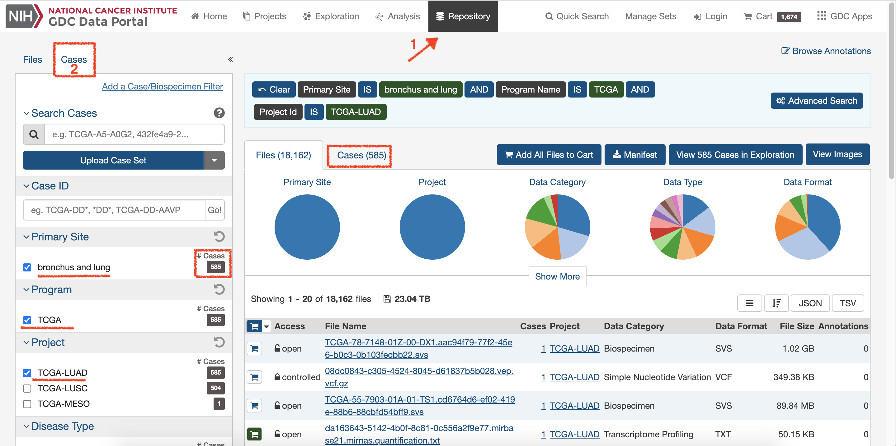
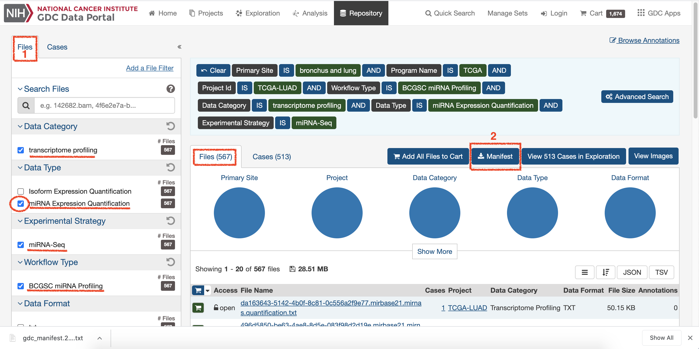
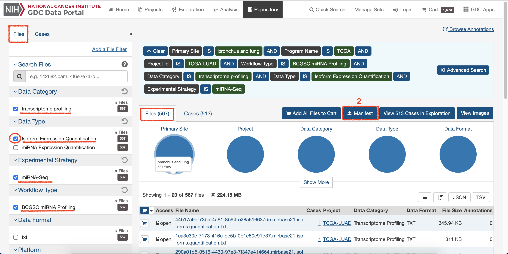
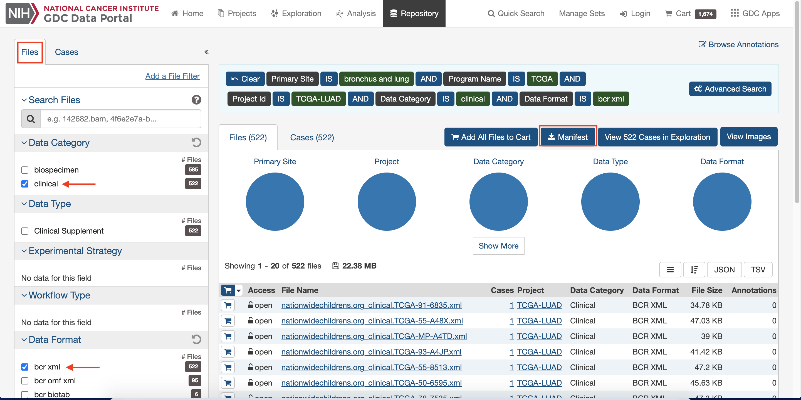
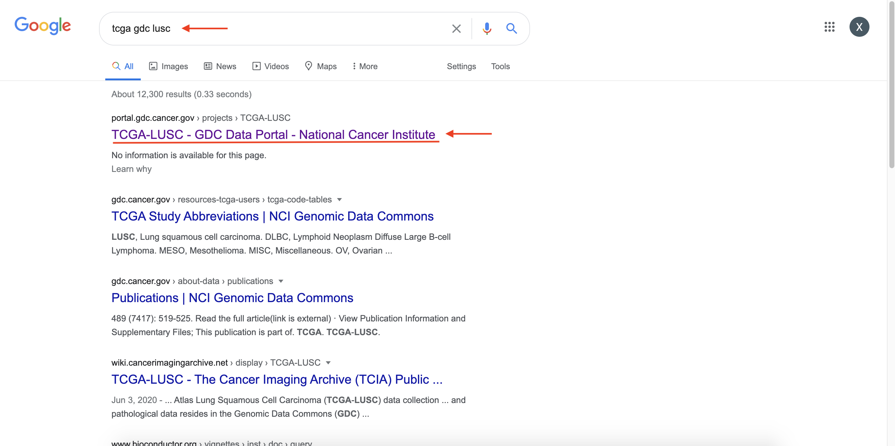
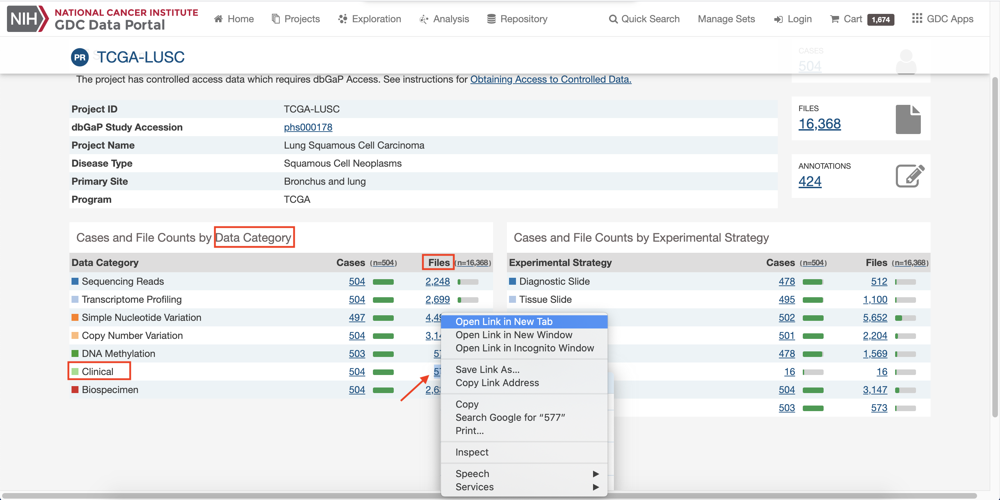
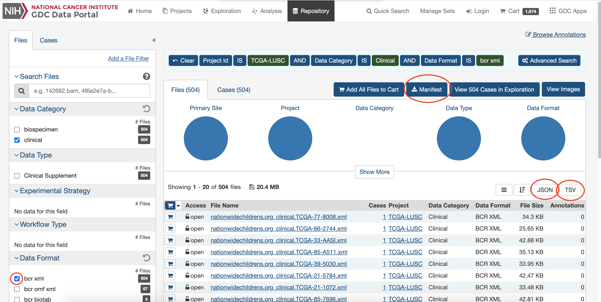
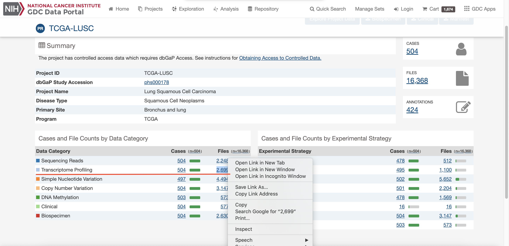
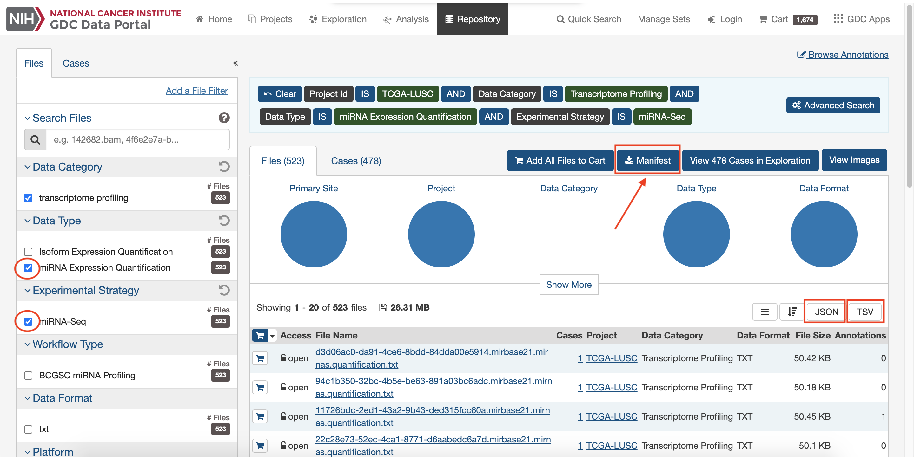
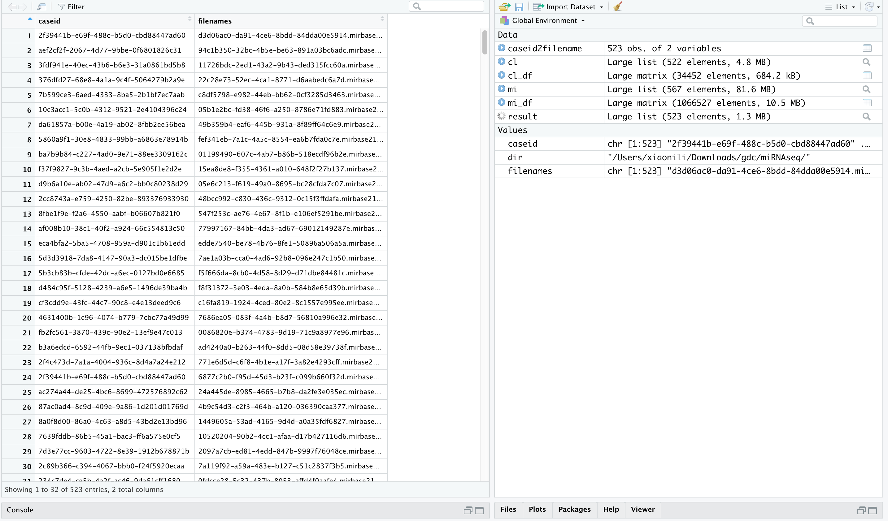

The Genomic Data Commons (GDC), is a research program of the National Cancer Institute (NCI).
The mission of the GDC is to provide the cancer research community with a unified data repository that enables data sharing across cancer genomic studies in support of precision medicine.
In Brief
-
Download Data with different methods
-
Data Wrangling
Example 1 Standarized Download
-
Click on
Repositoryand chooseCasesto setup interested data: TCGA-LUNG.
-
Choose
Filesand select interested demand, and then click onManifestto download data1.
-
Continue, select
Isoform Expression Quantificationto change Data Type and click onManifestto download data2.
-
Keep
Casesselection, remove all previously selection on the page ofFiles. -
Select clinical from
Data Categoryand bcr xml fromData Format, then Download data3.
-
Count number of lines in all downloaded data.
|
|
- Download the GDC Data Transfer Tool Client.
|
|
- Check the usage of gdc-client.
|
|
- Check usage of gdc-client download.
|
|
- Download Manifest files.
|
|
- Check the information of files downloaded.
|
|
Data Wrangling
Data of overall Information
|
|
R Scripts For Single Sample
- Choose one file of clinical randomly to get the format of sample.
|
|
-
Follow the usage of R - XML Files.
-
Open R.
The xml file is read by R using the function xmlParse(). It is stored as a list in R.
-
Reading XML File.
1 2 3 4 5 6 7 8 9 10 11# Load the package required to read XML files. library("XML") # Also load the other required package. library("methods") # Give the input file name to the function. result <- xmlParse(file = "nationwidechildrens.org_clinical.TCGA-75-7030.xml") # Print the result. print(result) -
Get Number of Nodes Present in XML File.
1 2 3 4 5 6 7 8 9 10 11# Exract the root node form the xml file. rootnode <- xmlRoot(result) # Find number of nodes in the root. rootsize <- xmlSize(rootnode) # Print the result. print(rootsize) output [1] 2 -
Details of the First Node and second Node.
1 2 3 4 5 6# Exract the root node form the xml file. rootnode <- xmlRoot(result) # Print the result. print(rootnode[1]) print(rootnode[2]) -
XML to Data Frame.
1 2 3 4 5# Convert the input xml file to a data frame. xmldataframe <- xmlToDataFrame(rootnode[2]) print(xmldataframe) t(xmldataframe) write.table(t(xmldataframe),'tmp')
-
Run R Scripts For All files
-
Complete scripts according to that of single sample.
-
Run Scripts.

Example 2 Fast Download
-
Enter Key words in Google and search: tcga gdc lusc.

-
Click on site 1, and download data of files.

-
Choose and download interested clinical data.

-
Choose and download interested Transcript data.


Run R.Scripts
-
Follow the usage of R-JSON Files and R - XML Files.
-
Run Rjson Script and get matched case id with file names.

In summary
- Anyway, here is the official GDC Documentation on line.